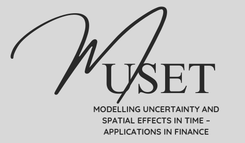
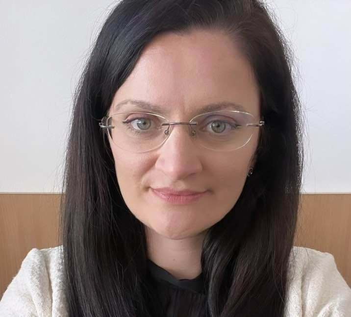

MUSET-TE is a young independent teams research project dedicated to Modelling Uncertainty and Spatial Effects in Time.
Codruța Mare is Prof. of Statistics and Econometrics at the Babes-Bolyai University, Cluj-Napoca, Romania. She has been involved in several national and international projects, including MSCA projects or COST Actions. Her interests are related to Statistics, Econometrics and Spatial Econometrics applied for daily life, along with forecasting techniques.

Gabriela-Mihaela Mureșan holds a PhD in Finance and is currently an Associate Professor in the Department of Finance at the Faculty of Economics and Business Administration, Babeș-Bolyai University. Her research interests span the fields of behavioral finance, economic psychology, insurance, and financial analysis.
TBA
TBA
Ștefana is a PhD candidate at Babeș-Bolyai University, researching Space-Time Predictive Econometrics. She teaches at Bachelor and Master levels and works as a Data Science Consultant at Endava, with expertise in NLP, LLMs, (web)GIS, geospatial analysis, predictive modeling, spatial statistics, and econometrics using ML and GenAI.